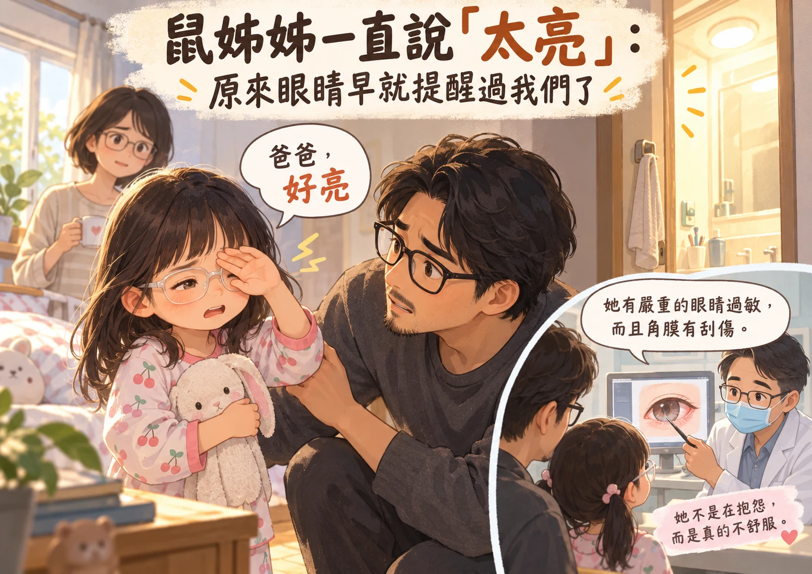
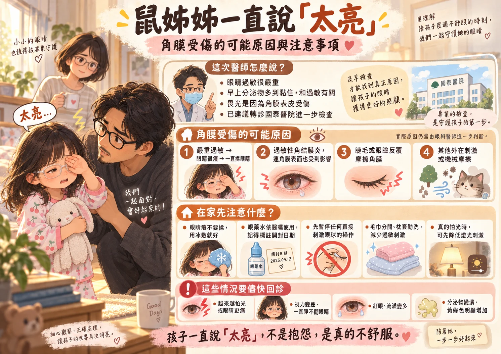

直到醫師說角膜破皮，我才發現：孩子的求救，有時只有三個字...

雞爸爸以前以為，當爸爸最怕的是孩子跌倒、生病；後來才發現，更怕的是孩子明明已經在求救，而自己還以為「應該沒事」。
最近每天早上要起床鼠姊姊都會遇到一堆麻煩事，首先是眼睛被黃色乾掉的分泌物黏住，沒有辦法睜開。其次，是鼠姊姊到現在還是習慣爸爸公主抱進廁所，坐在馬桶上吸鼻子過敏的藥和抗氣喘藥，才慢慢睜開眼睛。只是最近一進廁所就會喊：「太亮了！眼睛沒有辦法睜開！」
雞爸爸一開始其實沒有太把這件事放在心上。因為雖然廁所是用白晝燈泡，但我們房間早上窗簾都會打開通風，外面的自然光還是會透進來；而且我們家廁所的燈因為和抽風機是同一個開關，幾乎整天都亮著。照理來說，不是什麼「突然從黑暗走進強光」的場景...
可是鼠姊姊一連好幾天，就是一直跟爸爸說：太亮了！
雞爸爸只先往比較簡單的方向想，是不是剛起床眼睛比較敏感？過敏讓眼睛不舒服？畢竟她本來就有過敏體質...只是那句「太亮了」出現的次數越來越多...不是偶爾一次，好像開始每天早上反覆說，這才讓雞爸爸意識到：這不是單純的起床氣，也不是燈的問題...
其實早在六月，鼠姊姊就曾經把角膜揉破皮
直到今天往前翻和鼠媽媽的LINE對話紀錄，雞爸爸才開始仔細回想那些被生活淹沒而被我們忽略的小事。大致有紀錄的，是從 5 月 30 日開始帶鼠姊姊到百胤做視覺舒壓點穴。到了 6 月 17 日，雞爸爸有請鼠媽媽帶她去看眼科。
那一次，醫師診斷是：過敏性結膜炎，而且鼠姊姊可能因為眼睛癢，一直揉、一直揉，已經把角膜磨破了一點皮。
那一刻不是只有「嚇到」，而是會冒出：「她已經說太亮多久了？我們是不是太晚發現？」
醫師開了兩瓶眼藥水，一瓶消炎殺菌，一天三次，只要沒有黃綠分泌物之後就停；另一瓶則是舒緩過敏，同樣一天三次。還特別提醒：眼藥水開瓶後只能放一個月。
現在回頭想，當時醫師最重要的交代，可能根本不是那兩瓶藥，而是一句很簡單的話：「眼睛癢，不要揉，冰敷就好。」
問題是—對一個五歲小朋友來說，理智上答應你，但手不一定做得到。
隨著六月那次角膜慢慢好了，生活也就繼續往前走。上學、接送、吃飯、睡覺、點眼、看視力…久了，我們甚至有點忘記：她的眼睛曾經因為過敏，癢到把角膜揉傷。
以為只是過敏 醫師卻說「畏光是角膜受傷」
隨著最近，鼠姊姊早上的分泌物又明顯變多，還記得前幾天回百胤院長診時，院長叔叔也提到鼠姊姊身體比較緊繃，小腿前側緊、肚子有氣結，加上外在環境潮濕、家裡有貓咪，以及她本來就有過敏體質，都可能讓最近的狀態比較明顯，所以雞爸爸最初還是往「過敏」想。
可是那句：「太亮了。」一直沒有消失。所以昨天，特別帶鼠姊姊到諾貝爾眼科檢查。醫師看完之後，一直強調：鼠姊姊的眼睛過敏很嚴重耶，並且直接斷定早上那些把眼皮黏住的黃色分泌物，確實和過敏有關。
聽到這裡，雞爸爸心裡還想：嗯，至少方向是對的。結果下一句就笑不太出來了。
醫師說：但鼠姊姊會畏光，是因為角膜磨破皮、受傷了，而且詢問是不是有段時間了，他覺得有點潰爛情形，建議我們要直接轉診到國泰醫院的陳映伊醫師，做進一步檢查。
那一刻，雞爸爸腦袋裡突然把六月和現在接在一起。原來鼠姊姊每天早上說：「爸爸，太亮。」不是討厭廁所燈，也不是剛起床比較敏感，而是角膜受傷真的會對光線很不舒服。
到底為什麼又磨破皮？先不要急著下答案
雞爸爸第一時間當然開始想：是不是過敏又太嚴重，鼠姊姊忍不住揉眼睛？畢竟六月已經發生過一次。最近視覺舒壓點穴，也有隔著眼皮按壓眼睛附近的操作，會不會增加刺激？
這些都是我們現在會想問的問題，但至少在國泰醫師進一步檢查以前，雞爸爸不想先替原因下結論。因為我們知道一件很明確的事：鼠姊姊本來就曾因為過敏揉眼，把角膜磨傷。
所以現在最重要的，不是先找一個答案，而是先把眼睛顧好。
眼睛癢，就照醫師以前教的：冰敷，不揉。
而角膜既然已經有傷口，我們也先暫停任何可能直接刺激眼球的操作，原因可以慢慢查，但眼睛不能拿來慢慢試。
恐怖的是孩子明明說了，家長卻沒收到訊號...
這一次，雞爸爸真正有感的，其實不是「角膜磨破皮」這幾個字。而是回頭才發現：鼠姊姊一直都有在說。六月的時候她忍不住一直揉眼睛，說的是：「因為很癢。」這一次，她一直跟爸爸說的是：「太亮。」
只是大人的腦袋很習慣替孩子解釋，「應該是過敏吧。」「剛睡醒而已。」「一下就好了。」我們沒有辦法總期待孩子把事情講完整，最好還可以告訴爸爸：「我的過敏性結膜炎可能又發作了，而且角膜表皮似乎有點受損。」
但五歲的小孩當然不會這樣講，她能告訴你的，只有：癢、亮、不舒服。然後用她僅有的方式，讓你知道身體正在發生什麼事情。以前雞爸爸常常覺得，小朋友最大的問題是不會表達。現在慢慢覺得，也許不是，因為院長叔叔其實一直都稱讚鼠姊姊的表達能力。
只是鼠姊姊能說出口的，是沒有醫學背景的感受。所以這一次雞爸爸提醒自己：下一次鼠姊姊同一句話說了第二次、第三次，不要急著替她找一個「應該沒事」的解釋，有些我們以為只是孩子的小抱怨，其實已經是她能說得最清楚的一句：「爸爸，我真的不舒服。」
而我們要做的，也許不是第一時間猜對答案，只是相信她的感受，然後一起找出原因...
原來雞爸爸真正怕的，不是黑暗，也不是鬼。是某一天回頭才發現，孩子其實早就一直說：「爸爸，我不舒服...」 而我卻因為太習慣替她找理由，晚了一步才聽懂...
